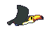
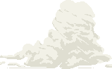
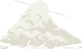
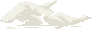
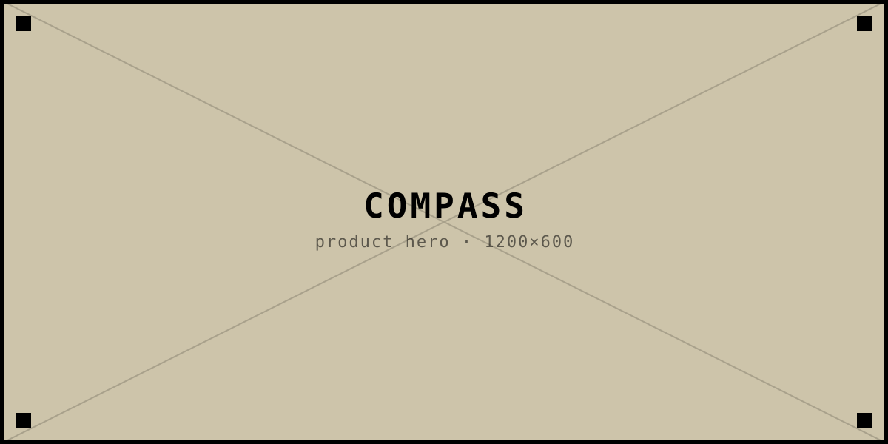
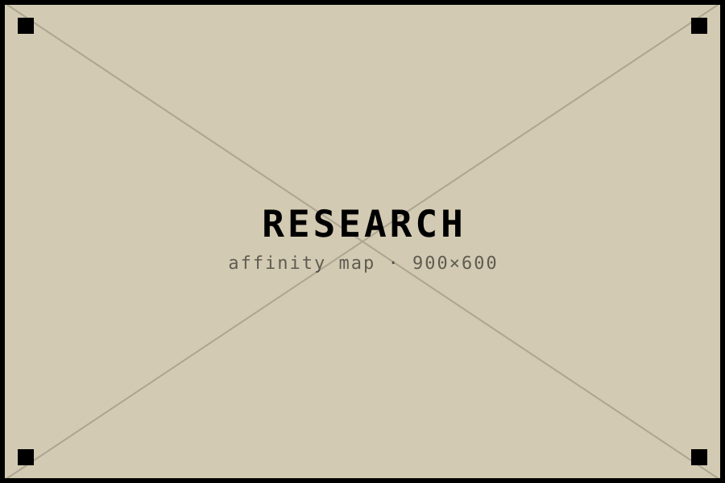
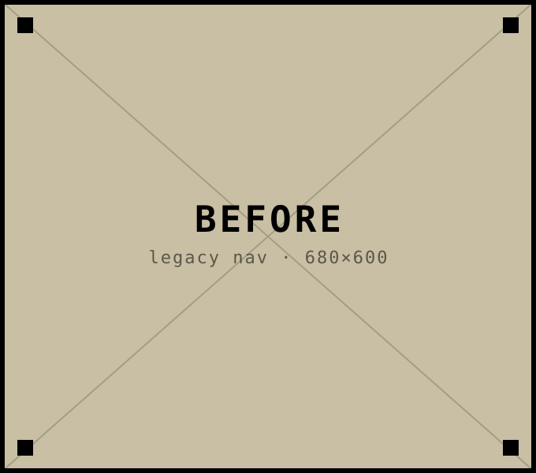
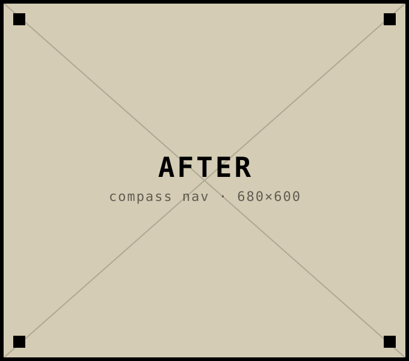
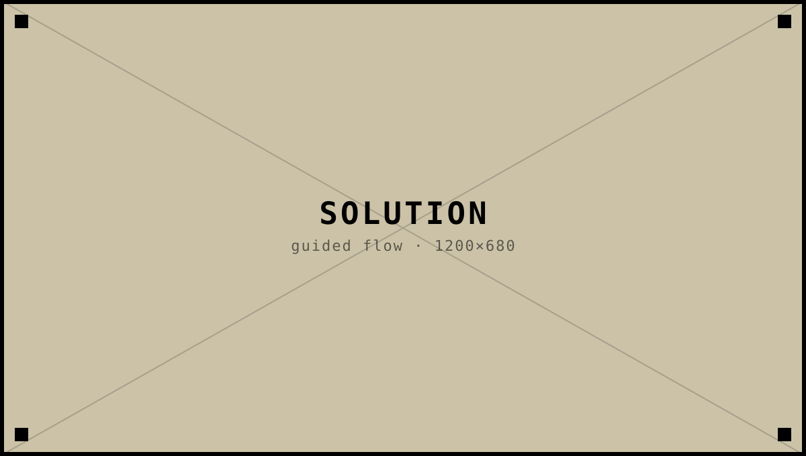
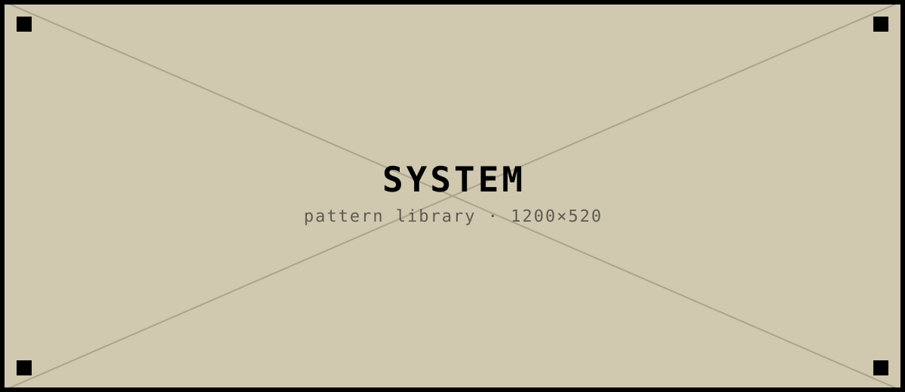

Alex Shaji
Product & Interaction Designer
I listen, I think, I imagine and I build




Product & Interaction Designer
I listen, I think, I imagine and I build
Open a folder to read more. Replace titles and copy with your real work.
Case study
A navigation and onboarding system that helped first-time users of a B2B analytics product reach their first insight 40% faster.

Compass is the analytics workspace that thousands of operations teams open every morning. Powerful, but unforgiving: new users landed on a blank dashboard with sixty data sources and no idea where to begin. Activation stalled, and support tickets piled up in the first week of every trial.
I led the redesign of onboarding and in-product navigation — from research through high-fidelity flows and engineering handoff — anchored on a single question: how do we get someone to a moment of value before they give up?
Trial users were dropping off fast. The product assumed expertise it never taught, and the navigation mirrored the database, not the user's job.

“I can tell the answer is in here somewhere. I just can't find the door.” — Operations lead, trial day 2
We reframed navigation around intent. Instead of a directory of sources, the home became a short, guided trail: pick a goal, connect one source, see one chart. Everything else stayed one keystroke away for the people who wanted it.


The shipped experience pairs a persistent “next best step” rail with a command palette for everyone past their first week. Onboarding is no longer a wizard you dismiss — it's woven into the surface and fades as you grow.


Beyond the numbers, the trail gave the team a shared language for every new feature: where does this fit on the path, and does it earn the interruption?
Experiments, writing, and things that do not fit a case-study folder.
I am a product and interaction designer who cares about clarity, craft, and the small details that make software feel human.
My process starts with listening — to people, constraints, and what is not being said — then thinking, imagining, and building until the idea is real enough to test.